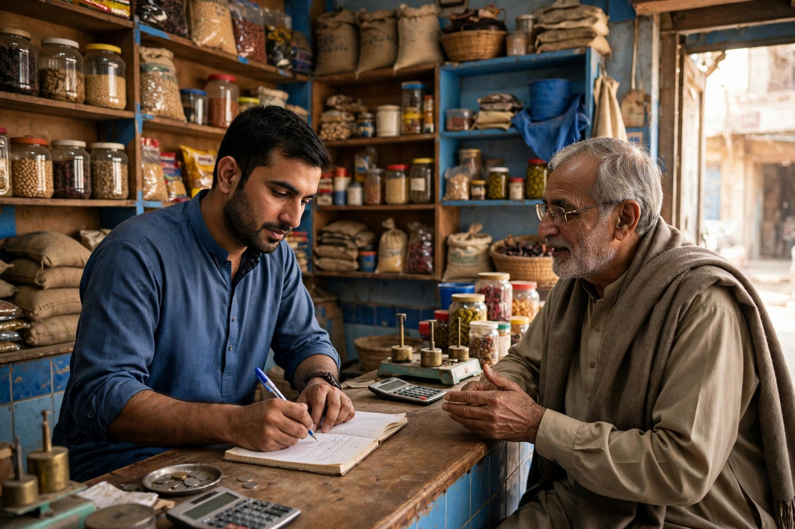

Every town has its own way of searching. People in Karor Lal Eason do not type formal sentences into Google. They type short, practical phrases, often mixing the thing they need with the town name, a bazaar reference or the words near me. If your business pages and Google profile use different words from the ones your customers actually type, Google may not connect the two. This article explains how local keywords work here and how to choose yours sensibly.
Zaheer Seo Expert is based in Layyah and has no office in Karor Lal Eason. We research and apply keywords for Karor Lal Eason businesses from Layyah, online and by phone, as part of our SEO services for Karor Lal Eason businesses.
How People in a Small Town Really Search
Most local searches follow simple patterns. A person types the product or service, sometimes with the town name, sometimes trusting the phone to know the location. A mother may search for a clinic, a student for a photocopy or computer shop, a farmer for a specific input, and a family planning a wedding for a caterer or a decorator. The wording is plain because the need is plain.
Many searches are also spoken rather than typed, especially by older customers. Spoken searches sound like questions and use everyday words. Content written in natural, clear language matches both typed and spoken searches far better than stiff, formal text stuffed with repeated phrases.
The Town Name Helps, But It Is Not Everything
Adding Karor Lal Eason to your page titles, headings and profile description, where it reads naturally, helps Google connect your business with searches that include the town. But repeating the town name in every sentence looks dishonest and reads badly. Use it where a real person would: in your address, in a sentence about the area you serve, and in the title of a page genuinely about serving this town.
Remember also that many customers search without any town name at all. For those near me searches, Google relies on your category, your pin position and your profile completeness more than on keywords. Keywords and Maps accuracy work together; neither replaces the other. The Google Business Profile optimization guide covers the profile side of this partnership.
Listen to Your Own Counter and Your Own Phone
The best keyword research in a small town starts with listening. What do customers call the thing they want? What words do they use on the phone when they ask if you have something in stock? What do they ask for that you do not sell, which tells you how people misunderstand your trade? Write these phrases down. They are worth more than any generic list downloaded from the internet, because they are the living language of your own market.
- Note the product names and brand names customers ask for most.
- Note the services people assume you offer, and clarify the real ones online.
- Note seasonal phrases that appear before sowing, harvest, Eid and the wedding season.
- Note village names customers travel from, and mention your service area honestly.
Use Keywords in the Places That Matter
Once you know your phrases, place them naturally in the few spots Google reads most carefully: your profile categories and services list, your page titles and headings, the first lines of your descriptions, and the text around your photos. One clear use in the right place is worth more than twenty awkward repetitions. Write for the customer first and let the keywords sit inside good sentences. Our keyword research work inside the local SEO and Google Business Profile service follows exactly this order: real language first, technique second.
Roman Urdu, English and Everyday Spellings
Karor Lal Eason customers move between English and Roman Urdu in daily life, and their searches reflect that mix. Some type in English, some in Roman Urdu, and spellings of the town name itself vary. You cannot cover every spelling, and you should not try to fill your pages with variations. Instead, use the standard spelling of your business and town names consistently, write descriptions in simple English with familiar local terms where natural, and rely on your category and location data to catch the rest. Google is quite good at understanding that differently worded searches often mean the same local need.
Check, Adjust and Keep It Honest
Keywords are not chosen once forever. Trades change, new products arrive and seasons rotate. Review your main phrases a few times a year, and whenever customers start asking for something new. If you have a website, your analytics can show which searches actually brought visitors, which replaces guessing with evidence over time.

If choosing the right words feels uncertain, that is normal. It is a defined part of the SEO work Zaheer Seo Expert does from Layyah for businesses here, described on the Karor Lal Eason location page and in our general article on SEO for Karor Lal Eason businesses. The goal is simple: when a Karor Lal Eason customer types the words that come naturally to them, your business is the clear, honest answer Google can show.
Frequently Asked Questions
How do I find the keywords my customers use?
Start by listening. Note the exact words customers use at your counter and on the phone, the products they ask for by name and the seasonal phrases that appear each year. That real language is your best keyword list.
Should I repeat Karor Lal Eason many times on my page?
No. Use the town name naturally in your address, titles and sentences about the area you serve. Repetition reads badly and does not help. Clear wording in the right places matters more.
Do Roman Urdu searches matter for my business?
They reflect how many local customers actually search. Use standard spellings consistently, write in simple natural language, and keep your category and location accurate so Google can match different wordings to your business.
Can Zaheer Seo Expert research keywords for me?
Yes. Zaheer Seo Expert is based in Layyah, with no office in Karor Lal Eason, and keyword research for businesses there is done online and by phone as part of its SEO services.
Want More Customers From Google?
Call 0327 7350830 or email seozaheer14@gmail.com. Zaheer Seo Expert, Layyah - Rajan Shah Road, Rana Nagar, Chak 116 TDA, Pakistan. Open 24 hours.
Get Your SEO Strategy →